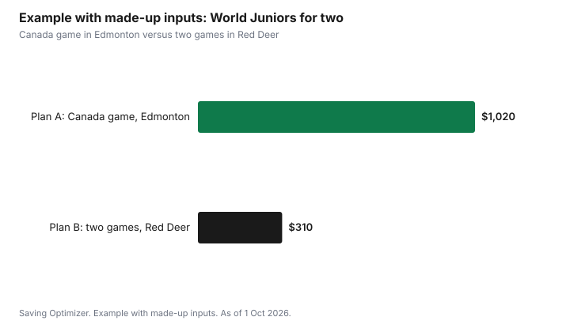

Sports · Canada
World Juniors 2027 in Edmonton and Red Deer: Tickets, Travel and Watching for Less
The 2027 IIHF World Junior Championship runs from 26 December 2026 to 5 January 2027 at Rogers Place in Edmonton and the Marchant Crane Centrium in Red Deer, Alberta. As of 1 Oct 2026, individual tickets start at $40 plus fees, sold by credit card only, and all sales are final. Team Canada plays its four preliminary-round games in Edmonton, so those are the most expensive and hardest to get. The cheapest way to see world-class junior hockey in person is a game that does not involve Canada, often in Red Deer, and the cheapest way overall is to watch on television with friends.
Key takeaways
- Dates: 26 December 2026 to 5 January 2027. Venues: Rogers Place, Edmonton, and Marchant Crane Centrium, Red Deer.
- Individual tickets from $40 plus fees as of 1 Oct 2026. Credit card only (Mastercard, Visa, American Express). All sales are final.
- Electronic tickets are expected in November and can then be transferred by email through the venue's account manager.
- Canada plays its four preliminary games in Edmonton and two pre-tournament games in Red Deer. Group A (Finland, Germany, Slovakia, Sweden, United States) plays in Red Deer.
- Red Deer packages are sold out; a limited number of Edmonton packages remained as of 1 Oct 2026.
- Example with made-up inputs: two non-Canada games in Red Deer for two people cost $310 with a day trip, against $1,020 for one Canada game in Edmonton with a hotel.
Where and when
| Item | Detail |
|---|---|
| Dates | 26 December 2026 to 5 January 2027 (pre-tournament games before) |
| Venues | Rogers Place, Edmonton; Marchant Crane Centrium, Red Deer |
| Teams and games | 10 countries, 29 tournament games |
| Group A, Red Deer | Finland, Germany, Slovakia, Sweden, United States |
| Group B, Edmonton | Canada, Czechia, Latvia, Norway, Switzerland |
| Canada | Four preliminary games in Edmonton; two pre-tournament games in Red Deer |
| Playoffs | Two quarter-finals in Red Deer; other playoff games and the relegation game in Edmonton |
Tickets: what the rules mean for your budget
Individual tickets for both cities went on sale after the priority draw, which closed on 6 January 2026. The IIHF says more than 85,000 fans entered the draw and more than 18,000 packages were sold. As of 1 Oct 2026, individual tickets start at $40 plus applicable fees, with availability varying by game and seat. Red Deer packages are sold out; a limited number of full-event and half-event packages remain in Edmonton.
- All sales are final. If plans change, your option is to transfer the ticket, not to get a refund.
- Payment is by credit card only: Mastercard, Visa or American Express.
- Electronic tickets are expected to be released in November. You will receive an email when they appear in your Ticketmaster, Rogers Place or Tickets Alberta account.
- Once released, tickets can be transferred by email through the same account manager.
- More tickets may be released closer to the tournament. Hockey Canada's Insider list sends updates.
Because sales are final and tickets are not released until November, be cautious with resale. Anyone selling a World Juniors ticket before tickets are released into accounts cannot yet transfer it to you. Pay only through the official platforms or a resale platform that guarantees the ticket, and never by e-transfer to a stranger.
Which games give the best value
Ticket prices depend on demand. Canada's games, the semi-finals and the gold medal game are in highest demand. Games between other countries, especially early in the tournament and in Red Deer, have more seats at the lower end of the price range. For a family or a first-time fan, a game between two strong hockey countries such as Sweden and the United States, or Finland and Slovakia, can be as entertaining as a Canada game at a fraction of the price.
| Game type | Typical demand | Budget note |
|---|---|---|
| Canada preliminary games, Edmonton | Highest | Most expensive; sells first |
| Gold medal and semi-finals, Edmonton | Highest | Most expensive; depends on who qualifies |
| Quarter-finals | High | Two are in Red Deer |
| Group A games, Red Deer | Moderate | Lowest prices, smaller arena, easy to reach from Calgary or Edmonton |
| Other Group B games, Edmonton | Moderate | Lower prices than Canada games |
| Pre-tournament games | Varies | Canada plays two in Red Deer |
Travel and accommodation
For fans outside Alberta, travel and hotels often cost more than the tickets. The tournament runs over Christmas and New Year's, when flights are expensive and many people travel anyway. Book early, compare flying into Edmonton or Calgary, and consider staying outside the city centre. Red Deer is roughly midway between Edmonton and Calgary, so fans in either city can do a day trip by car.
| Line | Questions | Your number |
|---|---|---|
| Tickets | Which games? How many people? | |
| Fees | Fees shown at checkout | |
| Travel | Flight, train or drive? | |
| Accommodation | How many nights? Hotel, rental or friends? | |
| Food | Arena food or eat before? | |
| Parking or transit | Downtown Edmonton parking or LRT | |
| Merchandise | One item or none |
Watching for less
In Canada, the World Juniors are traditionally broadcast on TSN and RDS. If you do not have TSN through a TV package, TSN sells streaming plans; as of 1 Oct 2026, tsn.ca lists TSN Standard at $24.99 a month and TSN Premium at $29.99 a month. One month covers the whole tournament, which runs from late December into early January, though it may cross two billing months depending on when you start. Read the cancellation terms.
A watch party is the cheapest way to share the tournament. The gold medal game on 5 January falls on a Tuesday. Games in Alberta start at Mountain time, so add two hours for Eastern viewers. The party hosting guide has a potluck sign-up sheet.
Example with made-up inputs: two plans for two people
These numbers are an example with made-up inputs. They are not ticket or travel prices. Two fans in Calgary compare plans. Plan A: one Canada preliminary game in Edmonton. Two tickets at a made-up $280 each with fees, $560; a hotel night, $210; gas, $90; food, $100; parking, $60. Total $1,020.
Plan B: two Group A games in Red Deer on the same day, as a day trip. Four tickets at a made-up $55 each with fees, $220; gas, $50; food, $40. Total $310, with no hotel. They watch Canada's games at home with friends.
| Line | Plan A: Canada game, Edmonton | Plan B: two games, Red Deer |
|---|---|---|
| Tickets with fees | $560 | $220 |
| Hotel | $210 | $0 |
| Gas | $90 | $50 |
| Food | $100 | $40 |
| Parking | $60 | $0 |
| Total | $1,020 | $310 |

Common mistakes
- Buying a resale ticket before tickets are released into accounts in November.
- Paying a stranger by e-transfer.
- Forgetting that all sales are final.
- Booking travel before tickets are secured.
- Focusing only on Canada games when other games cost much less.
For the NHL season and other hockey viewing, see how to watch the NHL in 2026-27. For the cost of playing, see minor hockey costs.
Sources
- IIHF, World Junior Championship 2027 Tickets, iihf.com, as of 1 Oct 2026. Dates, venues, groups, 29 games, tickets from $40 plus fees, credit card only, all sales final, e-tickets in November and transfers, Red Deer packages sold out, priority draw closed 6 Jan 2026, more than 85,000 entries and 18,000 packages.
- Hockey Canada, 2027 IIHF World Junior Championship tickets page, as of 1 Oct 2026.
- Hockey Alberta, Schedule and individual ticket information announced, 22 Sep 2026.
- TSN, Subscribe (tsn.ca/subscribe), as of 1 Oct 2026. TSN Standard $24.99 a month and TSN Premium $29.99 a month.
- The two fans, both plans and every amount in the example table and chart are an example with made-up inputs.
Frequently asked questions
When and where are the 2027 World Juniors?
The 2027 IIHF World Junior Championship runs from 26 December 2026 to 5 January 2027 at Rogers Place in Edmonton and the Marchant Crane Centrium in Red Deer, Alberta.
How much are World Juniors 2027 tickets?
As of 1 Oct 2026, individual tickets start at $40 plus applicable fees, with prices varying by game and seat. Payment is by credit card only, and all sales are final.
Can I get a refund on World Juniors tickets?
No. All sales are final. Once electronic tickets are released in November, you can transfer them by email through your Ticketmaster, Rogers Place or Tickets Alberta account.
Where does Canada play at the 2027 World Juniors?
Canada plays its four preliminary-round games in Edmonton and two pre-tournament games in Red Deer. If Canada advances, it may also play playoff games in Edmonton.
Researched and drafted with AI assistance and fact-checked against official Canadian sources. How we create content.
Disclosure: Saving Optimizer may earn a commission if a partner link is added later, such as a ticketing or streaming offer type. No partnership with the IIHF, Hockey Canada or any venue is claimed on this page, and no service is ranked. Education only.